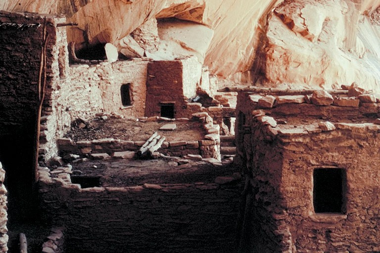

Arizona's history stretches back thousands of years. Sophisticated Native American cultures thrived in the region, including the Hohokam and Salado. These groups were known for their complex social structures, advanced irrigation systems, and impressive architecture. Their legacy is still visible in archaeological sites across the state.
Spanish conquistadors arrived in Arizona in the 16th century. Their arrival introduced European diseases that devastated the indigenous populations. The Spanish also established missions and settlements, forever changing the landscape and introducing European culture and customs. Mining activity increased during this period.
After Mexico gained independence from Spain in 1821, Arizona became part of Mexican territory. Mexican influence can still be seen in the state's culture, language, and cuisine. Mining continued to be an important economic driver during this time.
In 1854, the United States purchased southern Arizona from Mexico through the Gadsden Purchase. The primary motivation for this purchase was to secure a more favorable southern route for the transcontinental railroad.
Arizona sided with the Union during the American Civil War. Following the war, conflicts arose between the U.S. military and Apache tribes who were resisting displacement from their ancestral lands. Arizona officially became a U.S. territory in 1863.
Arizona achieved statehood in 1912, becoming the 48th state in the United States. The discovery and subsequent boom of copper mining significantly shaped the state's economy and attracted a wave of settlers. Arizona's population grew rapidly during this period.
The 20th century saw major developments in Arizona, including the construction of the Hoover Dam. This engineering marvel transformed the state's landscape by creating Lake Mead, enabling large-scale agriculture, and providing hydroelectric power. Tourism also boomed in the 20th and 21st centuries, with the Grand Canyon and other natural wonders attracting visitors from around the world. Arizona's population has continued to grow significantly in recent decades, making it a major center for business, recreation, and cultural diversity. (Google Gemini, personal communication, March 18, 2024)
